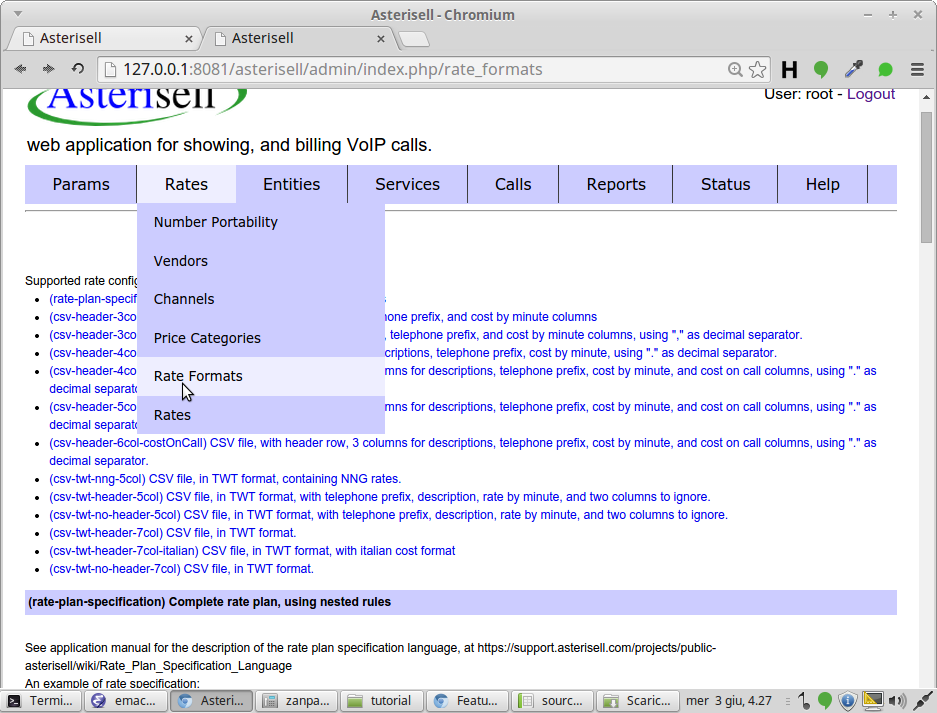
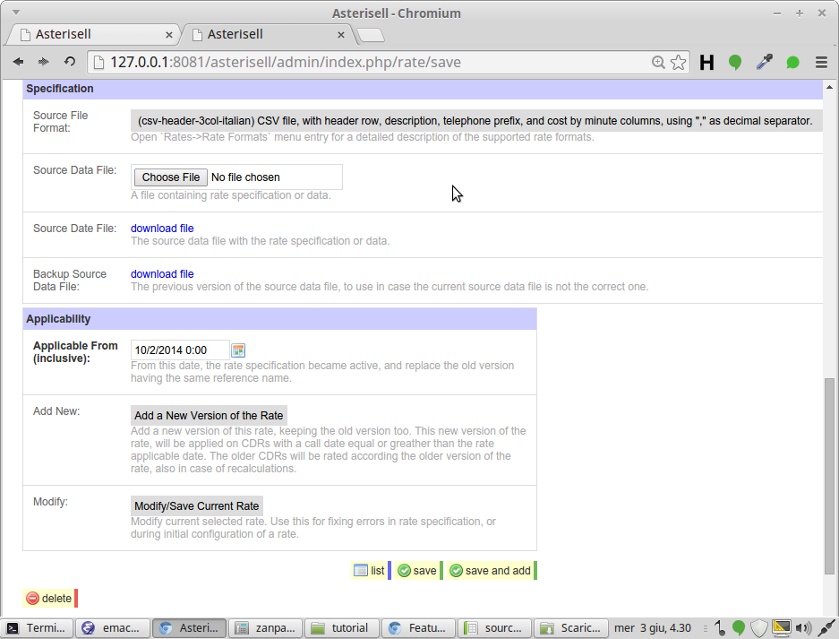

Asterisell Configuration¶
Configuration is an iterative process:
- initial configuration attempt
- wait Asterisell rate CDRs
- study error messages
- improve configuration accordingly
- CDRs are automatically rerated
- repeat until there are no more error messages
Warning
Initial configuration of Asterisell is the most difficult part of Asterisell usage. After configuration, the application works in a rather automatic way, and maintainance is a lot more easier.
In case you need help, you can contact the Asterisell Support.
Basic Configurations¶
CDRs Providers¶
First CDRs must be imported inside Asterisell.
CDRs can be retrieved from different sources/providers. A CDR provider
must be defined in Params->CDRs Providers.
A CDR provider is some computer related medium (a directory, a database table, some message queue, an FTP account, etc..) containing CDRs to import into Asterisell.
Vendor¶
A Vendor is a fiscal entity that routes CDRs, and that can requires payments for this service.
Note that a CDR provider is not a Vendor, also if in many configurations there is a one to one match between a Vendor and a CDR provider. There can be configurations where the same CDR provider is used from many Vendors (you retrieve CDRs from ony of your VoIP server, configured for collaborating with many VoIP providers), or a Vendor can use more than one CDR provider (the Vendor uses multiple FTP accounts).
Vendors are created in Rates -> Vendors menu.
Communication Channels Types¶
A cummunication channel type identifies the type of the call. It is something like:
- SIP Calls
- Fixed Line Calls
- Mobile Calls
- ENUM Calls
- etc..
Communication Channels types are created in Params -> Communication Channels.
Communication Channel¶
A Communication Channel is a (low-level system) value inside a CDR identifying the channel
used for routing the call, and so also the communication channel type
(the high-level description of the type of the call/CDR).
Association between a Communication Channel, and a Vendor and the
corresponding Communication Channel Type are done in the menu
Rates -> Channels. By default an imported CDR, is associated to a
Vendor and a Communcation Channel Type according the content of this
table. But there can be specific importing methods, assigning predefined
Vendors or Communication Channel Types to a CDR, in case the logic is more
complex, and needs specific customizations.
Up to date rates can not match on CDR provider, but only on channel. See #1909.
CDRs Importing¶
Manual Importing¶
The source CDRs files must be put inside the directory
data_files/messages/input. They must have a name compatible with Asterisell format (described later).
, otherwise Asterisell signals the problem, and it will not import them.
Manual importing of CDRs files is not the suggested way. It is preferred configuring some import jobs. If you import them manually, make sure to:
- copy the files in a tmp directory inside the same filesystem
- move the files in the Asterisell directory
data_files/messages/input - file moving in Linux is an atomic operation, if and only if the source and destination directories are on the same file system
- doing so, you are sure that Asterisell will process the entire content of the file, and there are no conflicts
- Asterisell jobs take care of this automatically
CDRs File Name¶
A CDRs source file has a name like
file1.some-cdr-provider__logical-type__version, where:
file1is some file name to use. It should be distinct, for avoiding clash during importingsome-cdr-provideris a name of a configure cdr-provider. In case there is no configured cdr-provider, Asterisell signals the problem, and does not import the file. The file will be imported later, automatically, when the problem is resolvedlogical-typeis the name of some type of file to import. If the type is not recognized, Asterisell signals the problem, and the file will be imported later, when the problem is resolvedversionis the name of the version of the type used. So the same type, can have different versions, with slightly different formats
CDRs Status Files¶
A CDRs CDRs status file name is like
file1.2015-01-01.some-cdr-provider__logical-type__version, where:
2015-01-01is a status file, with all the calls of the day2015-01-00is a status file, with all the calls of the month2015-00-00is a status file, with all the calls of the year- the other parts of the file name follow the same convention of CDRs file name
The importing of a status file:
- delete all the calls in the status file time-frame, of the same provider
- insert the calls in the status file
- the net effect is replacing the calls in the status time frame, with the content of the status file
Pseudo CSV File¶
Asterisell supports a pseudo CSV-file format:
- multi lines are not supported
- it extracts first a distinct line from a file
- it process it like a CSV file line
This format is useful in case there can be errors in the CSV files, because it minimize the number of unrecognized entries, in case of a missing ending quote.
How CDRs Source File are Saved Internally¶
CDRs source file are processed from Asterisell, and imported in
Asterisell internal table ar_source_cdr. This table store the source
CDRs:
- in a compressed format saving a lot of space
- bakc in their original format, when decompressed, allowing a complete reprocessing if the rules about their processing changes
Automatic Importing¶
You can add jobs into Asterisell, for importing files from different communication channel sources like FTP, WebDAV, external database tables, and so on.
TODO continue
How Importing From Collector Table¶
apps/asterisell/lib/jobs/data_file_processing/ImportCDRSFromDatabase.php
is the abstract Job to use for retrieving CDRs from a collector table.
It:
- reads CDRs on a table of a database, that is acting like a queue of CDRs to process,
- convert to CSV files the CDRs to process,
- put the generated CSV files on the input queue of Asterisell,
- remove (optionally) older CDRs already exported to Asterisell, managing the table as a queue,
It is an abstract class, so:
- a concrete class/job must be inherited from it,
- the inherited job, must define the missing methods, respecting the requirements on method headers descriptions,
- the inherited job must be added to the list of jobs to process before
rating, adding it to the
import_cdrs_jobsoption of the instance configuration file
One or more jobs of this type can be added, without conflict.
“is_exported_to_asterisell” flag field¶
You should be able to add to the CDR source table on the collector, a field like this:
ALTER TABLE your_table_name
ADD COLUMN is_exported_to_asterisell TINYINT default 0 NOT NULL,
ADD INDEX is_exported_to_asterisell_index(is_exported_to_asterisell);
This field will be used from Asterisell for importing only new source CDRs. The source table will work like a queue.
Transactions are used, so in case of connection problems, the CDRs will be imported and rated again.
Tables on External Databases¶
An external database is a database that is not on the same Linux instance where Asterisell is installed.
TODO continue
Tables on the same Host and Database Server¶
If the table with source CDRs is on the same Host and Database Server, you can optimize further the processing of source CDRs.
First show the format of the table, executing something like
show create table your_table_name;
It is important the last line of the table creation:
ENGINE=InnoDB AUTO_INCREMENT=51438 DEFAULT CHARSET=latin1
Asterisell uses the TokuDB engine:
- it can compress data
- it is fast and reliable
- it is studied for big data
- it is 100% compatbile with all the SQL and MySQL API commands issued to a InnoDB engine
So you can switch the engine used for the table, to TokuDB. The application writing to it will not notice the difference.
If you have not many source CDRs, and you can interrupct the CDR stream flow, you can execute a command like
ALTER TABLE your_source_cdrs_table_name ENGINE=tokudb COMPRESSION=tokudb_quicklz,DEFAULT CHARACTER SET = latin1;
specifying the same character set of your original table. Asterisell uses UTF8 character set for its tables, but during exporting and importing, it can convert between different character-sets.
If you cannot interrupt the stream of CDRs, consult the assistance. It is possibile copying on the fly old and new CDRs, and them executing a fast switch.
Fix Errors in Imported CDRs¶
If CDRs contains errors, and the error is in Asterisell code processing them:
- ask for Asterisell Support, specifying how the CDRs must be processed;
- install the new version of Asterisell;
- rerate CDRs;
If the source VoIP server are configured in a bad way, and there are errors in the content of the collector table:
- TODO description to improve
- use CSV utility functions shipped with Asterisell, for fixing errors directly in CSV files;
- rerate CDRs;
This workflow is needed because:
- CDRs are rerated starting from CSV files;
- the collector table is used only as an intermediate queue for CDRs;
- new CSV files add only new info, and do not delete old info;
- in place replacing of CSV file content, and a rerating command, is a method for updating CDRs, because all CDRs in the timeframe are deleted, and then new version of CDRs are inserted;
Rating Plans¶
In Asterisell there are two main rating plans: main-cost-rate, and
main-income-rate. They specify the rating plan logic. They can have
references to rating plan details, for example to CSV files.
Usually the initial specification of rating plans can be difficult, but then updating rates is rather easy.
Call Reporting Mode¶
In Call Reporting Mode, Asterisell is not used for billing the calls, but calls have only a cost.
The user must specify only the main-income-rate. It is called
income but it is rating the costs of calls. The resulting CDRs will have
income and cost equals.
Cost Rates¶
Free Incoming and Internal Calls¶
rate {
id: free-incoming
match-call-direction: incoming
}
rate {
id: free-internal
match-call-direction: internal
}
Multiple Vendors¶
You can have multiple vendors (also called suppliers), that you use for routing the VoIP calls.
You list your vendors, using the Rates -> Vendors menu.
Every CDR has a communication channel. During CDR processing you can
specify in Rates -> Channels how to associate a communication
channel name to the Vendor. When a CDR has the specified communication
channel, then it is considered as routed from the specified Vendor.
Note that are possible also more sophisticated associations between CDRs and Vendors, but you must contact the assistance for this.
Then in the rate plan you specify how to rate the CDRs according different vendors:
rate {
id: outgoing-rate
match-call-direction: outgoing
rate {
id: vendor1-rate
match-vendor: vendor1
external-rate {
id: csv
use: vendor1-csv-details
set-cost-for-minute: this
}
}
rate {
id: vendor2-rate
match-vendor: vendor2
external-rate {
id: csv
use: vendor2-csv-details
set-cost-for-minute: this
}
}
}
Income Rates¶
Free Incoming and Internal Calls¶
rate {
id: free-incoming
match-call-direction: incoming
}
rate {
id: free-internal
match-call-direction: internal
}
Rate according Customer Price Category¶
rate {
id: outgoing
match-call-direction: outgoing
rate {
id: wholesale
match-price-category: wholesale
external-rate {
id: wholesale
use: sell-wholesale
set-cost-for-minute: this
}
}
}
TODO continue¶
Tutorial on CSV Rates¶
This is a CSV rate, with prices specified by minute, and applied by second. The prices are in Italian format: with ”,” as decimal separator.

We check if the rate format is one of the supported formats

Yes it is supported:

In case it is not supported, you can:
- contact the assistance, for adding the format to the application
- convert the CSV file to one of the supported formats
Now we open the Rates -> Rates menu, and we create a new rate. We
upload the CSV file, specifying also its format.

The CSV file alone is not sufficient for rating the calls. We had to
specify a rate plan, classifying the calls by type, and applying the
correct rating method. The default name for these rates is
main-income-rate, and the default type is
rate-plan-specification. Don’t worry: if you don’t specify this
rate, the application will advise you.
So in Rates -> Rates we insert
and we specify this rate plan

After specifying it, Asterisell schedules an automatic rerating of unbilled calls.

Every rating error is reported.
We can inspect a rated call


Usually price-lists changes over time. We can modify the CSV file:

Now we upload the new version of CSV file, selecting the current version

We upload the new version, specifying the date on which it takes effect:

We can see that there are the two version of the same CSV file, applicable at different call-dates:

We have not touched the main-income-rate, because usually the main
rate plan does not change, but only the CSV files with the details of
the rates.
An automatic rerating is scheduled, and we can inspect the differences


Rate Plan Specification¶
This is a complete specification of the rating plan language.
Normal Rates¶
The rate plan contains nested rules. There can be one or more rates at the root level, and each rate can have arbirtrary nested children rates.
This rate plan is the entry point for calculating the cost or income of a CDR, but it can contains references to other rate plans, like CSV files.
This is an example of rate specification:
rate {
id: outgoing
match-call-direction: outgoing
rate {
id: free-emergency-telephone-numbers
match-telephone-number: 118,113,11X
}
rate {
id: default
match-price-category: normal
set-cost-on-call: 0.05
external-rate {
id: csv-1
use: csv-1
}
}
rate {
id: discounted
match-price-category: discounted
set-cost-on-call: 0.05
external-rate {
id: csv-discounted-2
use: csv-discounted-2
}
}
}
rate {
id: free-incoming
match-call-direction: incoming
}
rate {
id: free-internal
match-call-direction: internal
}
In these specification notes:
- “[...]” is used only as documentation placeholder, for documenting the possible values to insert.
- A reference name is something like “some-name”, “another_example_of_name”, “some_name/with_an_implicit/hierarchy_notation”.
The specification is
rate {
# "rate" is a rate that can be applied to a CDR, and that can calc its cost/income.
id: [reference]
# a short internal reference name, used also in debug sessions for
# discovering which rate is applied to a CDR.
#
# Specify on which CDRs the rate is applicable
#
# All these matches are optionals.
match-communication-channel: [list of communication channel types]
# if the CDR match one of the channels in the list, this rate can be applied
match-vendor: [list of vendors]
# if the CDR match one of the vendors in the list, this rate can be applied
match-price-category: [list of price categories]
# see notes on "Rates->Price Categories" section, on how to model hierarchical price categories.
match-call-direction: [outgoing|incoming|internal|system]
match-telephone-number: [list of telephone numbers]
# The external telephone number:
# * the called telephone number for outgoing and internal calls,
# * the calling telephone number for incoming calls.
#
# Telephone numbers are expressed in the same format used for specifying internal extensions,
# so something like "123,123X,123X*,123*,123\X\*",
# where "X" stays for any character,
# "*" stays for zero or more characters.
# "\\\\" is the quotation for the "\\" character.
# "\," is the quotation for the "," character
# " 123, 456" is parsed into extensions "123", and "456"
# " 123, 4 5 6" is parsed into extensions "123", and "4 5 6"
# "\ 123, \ 456" is parsed into extensions " 123", and " 456"
#
# NOTE: in case of a list of many telephone numbers, it is best using CSV files, and external-rate references.
#
# Specify how to calculate the cost of the call
#
# NOTE: Sets must be always specified after the match part.
# These are the tranformations that can be applied on the
# billable duration of a call.
# The tranformations are applied in the specified order,
# so also the order of specification is mandatory.
# If a parameter is not specified, the default value is assumed.
set-free-seconds: [number of seconds]
# do not apply the cost-for-minute to these first seconds.
# 0 is the default value.
set-duration-discrete-increments: [number of seconds]
# rate every specified seconds.
# 0 is the default value.
#
# If the specified value is for example 3,
# then a call with duration 0,1,2 is considered as 3 second,
# a call with duration 3,4,5 is considered as 6 seconds, and so on.
set-at-least-seconds: [number of seconds]
# consider the call at least as the specified seconds
# These are the tranformations that are applied to the cost of a call.
# The tranformations are applied in the specified order,
# so also the order of specification is mandatory.
# If a parameter is not specified, the default value is assumed.
set-cost-on-call: [1.0|imported|expected]
# the initial cost of the call (default value is 0)
# "imported" is used for CDRS imported from external sources, having already the cost/income calculated
# "expected" is used for CDRS imported from external sources/providers, and force the usage of the expected cost field
set-cost-for-minute: [1.0]
# the cost of the call,
# specified for every minute, otherwise the value is too low to specify,
# but applied by default for every second of call.
# (default value is 0)
set-max-cost-of-call: [1.0]
# apply this cost, if the calculated cost of the call is major than this
set-min-cost-of-call: [1.0]
# apply this cost, if the calculated cost of the call is less that this
set-round-to-decimal-digits: [integer]
# round the cost of the call to the specified digits.
# For example 2.41, 2.44 became 2.4, and 2.45, 2.48 became 2.5, when rounding to the 1st decimal digit.
# If left unspecified, use the maximum possible precision, without any rounding.
set-ceil-to-decimal-digits: [integer]
# ceil the cost of the call to the specified decimal digits.
# For example both 2.41, 2.44, 2.48, became 2.5 when ceiling to the 1st decimal digit.
# If left unspecified, use the maximum possible precision, without any rounding.
# This operation is done after the round operation.
# So it is possible round to 4 digit, and ceiling later to 3 digits.
set-floor-to-decimal-digits: [integer]
# floor the cost of the call to the specified decimal digits.
# For example both 2.41, 2.44, 2.48, became 2.4, when flooring to the 1st decimal digit.
# If left unspecified, use the maximum possible precision, without any rounding.
# This operation is done after the ceil operation.
rate {
# A child rate, inherits all the sets and matches of its parent rate, and it can override them.
# Rates can be arbitrary nested, in order to grouping rates by common characteristics.
# For avoiding ratinng errors, if a rate has one ore more children, then one and only one of its children
# must match the CDR with stronger priority, and it will be used for rating the CDR.
# If there are two or more matching rates, then an error is signaled.
# If no children match the CDR, then an error is signaled.
id: [reference]
# this can be a short id, because the complete rate reference name will
# contain automatically also the parent id.
# For example "root/outgoing/emergency-telephone-numbers" is a complete path of ids,
# where the single id parts are "root" for the id of the initial root rate,
# "outgoing" is the id of the first nested rate, and "emergency-telephone-numbers" is
# the id of the final nested rate. If the final nested rate is applied to a CDR,
# then the signaled applied rate is "root/outgoing/emergency-telephone-numbers".
# So there can be repeated "id" names in nested rates, because only the full
# path id must be unique.
[continue with another rate specification]
}
rate {
[another rate specification]
}
# A child rate is selected only if:
# * the parent rate is applicable (so it inherits the matches of the parent)
# * it is applicable
# * there is no other children rate that is applicable using stronger matches on the match-telephone-number part
# So it is always selected the children rate with the longest matching telephone number.
# In case of two children rates matching a telephone number with the same strength, a rating error is signaled
external-rate {
# this is another child rate, but of type "external-rate", instead of generic "rate"
#
# An "external-rate" calls another rating method, specified in an external rate specification file,
# typically a CSV file in some rating format associated to it.
#
# An external-rate can have no nested children rates.
id: [reference]
use: [rate-reference-name]
# the name used in "Rates->Rates" form, for naming the external rate to call.
# The format of the rate is specified in "Rates->Rates".
# The external rate contains additional matches, and return calc params on the CDR.
set-cost-on-call: [parent|this|specific-value]
# Use "parent" for inheriting the value of the parent rate.
# Use "this" for using the value returned from the called external rate.
# Use the specific value instead
# This is needed because calc params must use a fixed order of specification,
# and in case you want change two parameters with some parameter inside,
# you must specify also if they are using the "this" or "parent" value.
# This is applicable to all "set-" calc params, and not only to "set-cost-on-call".
}
}
Rates with Explicit Priority¶
By default rates are selected according the longest matched telephone
prefix. But rates can have also an explicit priority, thanks to else
construct. Given an example like this:
rate {
id: r1
rate {
id: r2
} else {
rate {
id: r3
}
}
} else {
rate {
id: r4
}
}
r1/r3 is applied only if:
r1is applicabler1/r2is not applicabler1/r3is applicable
r4 is applied only if:
r1and its children rates are not applicabler4is applicable
So rate r1 has implicitely more priority (is always preferred)
respect rate r4, and the same is true for r1/r2, against
r1/r3.
Bundle Rates¶
A bundle-rate is a way to rate a group of calls, while certain limits are respected. After the limits are reached, the bundle-rate can not be anymore applied, and normal rates are applied to next calls.
Bundle-rates specification can be complex. So you can ask for help to Asterisell assistance. This documentation will be improved according.
A bundle-rate has effect in a time-frame. For example there can be monthly bundles, weekly bundles, and so on.
At the end of each bundle time-frame, the bundle-rate status is resetted:
- limits are set to their initial values.
- service-cdrs are generated.
A service-cdr is a pseudo call, associated to every organization/extension/customer affected by the bundle-rate, used for reporting the bundle-rate cost.
A bundle-rate rate calls in two ways:
- rating the calls that are part of the bundle, with the rate associated to the bundle-rate
- generating the service-cdrs at the beginning of the bundle-rate timeframe
Bundle-rates can be used for specifying things like:
- apply a fixed cost of 10 EUR, for the first 60 minutes of mobile calls of a month, and rate normally other calls;
- rate the first 60 minutes of mobile calls of a month, using a discounted cost;
Up to date, bundle-rates can be used only for specifying the income of a call, not the vendor cost.
Example of Bundle-Rate Specification¶
bundle-rate {
id: monthly-flat
service-cdr-type: Bundle Rate
service-cdr-description: Monthly Flat: free 1 hour of mobile calls, and 2 hours of fixed-line calls.
schedule-every: month
schedule-from: 1
apply-for-each: mothly-flat
limits-are-proportionals-to-activation-date: true
limit-on: nothing
calls-can-be-split: true
only-for-calls-with-a-cost: true
set-bundle-initial-cost: 25
rate {
id: free-outgoing
match-call-direction: outgoing
rate {
id: fixed-line
match-communication-channel: fixed-line
limit-on-first-seconds: 7200
# 2 hours
}
rate {
id: mobile
match-communication-channel: mobile
limit-on-first-seconds: 3600
# 1 hour
}
}
}
Specification¶
bundle-rate {
id: [reference]
service-cdr-type: [textual description]
# a short textual description/name for the type of service-cdr.
# Usually something like "Bundle Rate", "Bundle Service", "Service", and so on.
# This name can be shared between different bundle-rates.
# It does not contain details about the service, but only an high level classification.
service-cdr-description: [textual description]
# a textual description, associated to the service-cdr,
# describing the details of the service offered/billed from the bundle-rate,
# in the call report, and invoices.
# It will be generated only if the bundle-rate service-cdr cost is greather than 0.
# It will be generated for each organization associated to the bundle-rate.
# There will be a unique service-cdr, with the sum of all the cost of nested bundle-rates.
#
# Mandatory Bundle Rate Schedule Options
#
schedule: [monthly|weekly]
# after each scheduling period (time-frame), the bundle rate status is resetted,
# and the bundle-rate service-cdrs are produced.
schedule-from: [1..28] | [Monday|Tuesday|...]
# specify the day of the month, or the day of the week, or the time-frame in days,
# when starting the new bundle-rate time-frame.
#
# Mandatory Bundle Rate Grouping Options
#
apply-for-each: [list of price-category]
# This bundle-rate is applied to organizations/extensions
# with a direct assignment to this specified price-categories.
#
# If an organization/extension inherits the price-category from its parent
# organization, but it has no direct assignment,
# then it has no a distinct bundle-rate status:
# * there is no separate limits allocated for the extension,
# but the limits of the parent organization are used instead;
# * a service-cdr is generated only for its parents with direct assignment;
#
# The date of price-category assignment is used for determining when the bundle-rate
# can be applied.
#
# Service-cdr is generated also if there are no calls for him, inside the time-frame.
#
# Mandatory Bundle Rate Limit Options.
#
limit-on-first-calls: [number|none]
# apply the bundle-rate only to the first specified calls, then use normal rates.
# "none" for no limit on the number of calls.
limit-on-first-seconds: [number|none]
# apply only for calls until the specified seconds.
# "none" for no limit on duration of calls.
limits-are-proportionals-to-activation-date: [true|false]
# true if the bundle-rate limits on an organization/extension created not at the beginning of a time-frame,
# but after X% days, must be scaled of X%.
#
# If true, then also the bundle-rate costs are proportional to the activation date.
#
# Only the activation (starting) date is considered, but not the date on which an organization/extension change
# price-category, and exit from the bundle-rate. The consequences are that if an organization enters
# at day 15 into a monthly bundle-rate A, and it exits from it at day 20 entering in monthly bundle-rate B,
# then the organization pays both the bundle A at 50%, and the bundle B at 66% for the month with the change.
#
# In case there are repeated assignments to the same price-category, inside the same time-frame of the bundle-rate,
# only the first assignment is taken in account.
calls-can-be-split: [true|false]
# true if the duration of a call can be split between a part respecting the bundle-rate limits,
# and another part outside these limits. The part respecting the limits, is rated using
# the bundle-rate, while the part not respecting the limits (the residual-duration)
# is rated using rates not associated to the bundle-rate.
# If false, then if a call is not completely inside the bundle-rate limits, is rated using the normal rates.
only-for-calls-with-a-cost: [true|false]
# true for applying the bundle only to calls having a positive cost.
# So free calls are not counted as inside the bundle.
# This is an advantage for end customers, because they can use the bundle
# only for calls with a cost.
#
# Bundle Calc Params
#
# These params are applied to special service-cdrs produced at the end of
# the bundle-rate time-frame (scheduling period).
#
set-bundle-initial-cost: [monetary-value]
# the initial cost of the service-cdr.
# At this value, will be added the cost of the calls rated inside the bundle.
# Default value: 0
set-bundle-min-cost: [monetary-value]
# if the total cost of the calls in the bundle
# (excluded the "initial-bundle-cost")
# is less than this specified value,
# thet it is set to this value.
# If it is greater, it is leaved unchanged.
# The rated calls will mantain their values,
# and a minimum-cost service-cdr will be generated
# at the end of the rating time-frame, matching the difference between
# this minimum value, and the total cost of the calls in the bundle.
# Default value: 0
#
# Rating Params
#
[rate-calc-params]
# these are the params used for normal rates.
# The calls inside the bundle will be rated using these params.
rate {
# this is a child-rate of the bundle-rate, and it is used for rating the calls
# inside the bundle, and for specifying nested bundle limits.
#
# Children rates, can be of any admitted type for normal rates.
#
# The cost of the calls are associated to the root parent bundle-rate,
# and they are taken in account for computing "set-bundle-min-cost".
id: [reference]
[match-filters]
# The rate can be applied only if filters are respected.
# These are the filters used for normal rates.
#
# The filter "match-price-category" is not allowed,
# because its semantic is in conflict with "apply-for-each" of the parent rate.
# So the price-category is implicitely the same of the parent rate.
#
# Optional Bundle Rate Limit Options
#
limit-on-first-calls: [number|none]
# For example if the parent bundle-rate, is limited to 100 calls,
# and the chidren bundle-rate on mobile-calls is limited to 50 calls,
# then the first 50 mobile calls decrease the limit of the parent rate
# to 50, and of the children bundle-rate on mobile-calls to 0.
#
# A limit in this rate is in logical "and" with the limit of the parent bundle-rate.
# So a user can place only 50 mobile calls, and if he place 25 mobile calls, he can make only
# 75 calls because the parent limit was decreased to 75.
limit-on-first-seconds: [number|none]
# apply only for calls until the specified seconds.
# The behaviour is similar to the case of "limit-on-first-calls".
#
# Optional Bundle Calc Params.
#
set-bundle-initial-cost: [monetary-value]
# default value: 0
set-bundle-min-cost: [monetary-value]
# default value: 0
# NOTE: all other params of the bundle-rate can not be changed, and they are the same of the parent bundle-rate.
#
# Rating Params
#
[rate-calc-params]
# Rate calls inside the bundle (respecting the time-frame, the match conditions, and the limits)
# according this rate params.
#
# The starting params are the params of the parent rate,
# and these params can overwrite them.
[other-nested-children-rates]
}
[other-children-rates]
}
Nested Bundle Rates¶
Bundle-rates have higher priority respect normal-rates. Normal-rates are selected only if there is no bundle-rate matching the call, or the call is outside the bundle-rate limits.
First the system select the bundle-rate with the best matching, respect other bundle-rates. It is selected the deepest bundle-rate. Then test if the call respect the bundle-rate limits. If they are respected the bundle-rate is applied, otherwise no other bundle-rate is applied, and the best matching normal-rate is applied.
The match condition on a bundle-rate are:
- the call is associated (directly or indirectly) to an organization with a direct assignment to the price-category of the bundle-rate;
- other normal rate conditions;
Residual Call Duration¶
If “calls-can-be-split” is set to false, then a call C is rated using some bundle-rate, only if its duration is completely inside the limits of the bundle-rate. Otherwise a normal rate is selected.
If “calls-can-be-split” is set to true, then the residual duration of the call is calculated, in case the call duration is not entirely within the limits of the bundle-rates. For example if call C duration is insidie B1 limits, but partially inside B2 limits, then:
- bundle-C is the call derived from C, with the duration inside the limits of B2;
- residual-C is the call derived from C, with the duration part outside the limits of B2;
- bundle-C is rated using B1/B2, because it respects the limits;
- residual-C is rated using normal rates;
Nested Organizations¶
Suppose that there is this organization hierachy:
A*A/B*A*/CwhereA/B*andA*/Care children of the parent organizationA*.
Suppose that:
A*is directly assigned to price-category pAA*/B*is directly assigned to price-category pBA*/Cis not assigned directly to any price-category, so its inherit the price-category ofA*
So we have a situation where we have nested organizations (main organization, departments, offices, extensions), and where each part of the organization can be assigned to a different price-category, and a different bundle-rate.
The rating method, favours always bundle-rates, respect normal rates. When bundle-rates can not be applied, it tries with normal rates.
So for a call associated to A*/C, it tries to apply the bundle-rate
associated to A*, because C has no bundle-rate, but A* is
subscribed to pA bundle-rate, and so it must take advantage of this for
all its extensions. If the bundle-rate can be applied to A*/C, then
the limits of A* are updated.
For a call associated to A*/B* organization, it tries to apply the
bundle-rate associated to pB price-category, because organization
p/B* is associated directly to pB. If the pB bundle-rate can
be applied to A*/B*, then only the limits of A*/B* are updated,
while A* is not updated.
If there is no bundle-rate on pB, or A*/B* has consumed all its
bundle-limits, then the system tries rating the call using the
bundle-rate associated to price-category pA, because A/B* is a
children organization of A, and A is “subscribed” to a
bundle-rate.
If there is no bundle-rate on pA, or A* has used all its limits,
then normal-rates are used.
Summing up:
- a bundle rate can be applied to all children extensions;
- a bundle rate generate a service-cdr (a cost) for each extension with a direct price-category assignation, corresponding to a bundle-rate;
- an extension with a direct association to a bundle-rate price-category, has its own limits, also because it pays for them;
- if an extension has used all its bundle-rate limits, then the parent organization bundle-rate limits can be used, and they can be associated to a different type of bundle-rate, because the bundle-rate hireararchy is distinct from the organization hierarchy, and extensions can have different price-categories respect the parent organization;
Limitations¶
Up to date bundle-rates:
- can be used only for specifying incomes for customers, and not cost for vendors;
- do not accept children bundle-rates with scheduling periods (time-frames) different from parent bundle-rate;
- do not accept children bundle-rates with “calls-can-be-split” value different from parent bundle-rate;
Changes of Rates¶
In Asterisell rates are modified adding a new rate plan, with an initial validity date. All the calls before this date are rated using the old version of the rating plan, while calls from the specified date, are rated using the new version.
In this way it is possible re-rating old calls, using the old version of the rating plans.
Changes of Bundle Rates¶
A Bundle Rate can change.
The id name of the rate is used for merging calls rated with bundle-rates of the previous rating plan. A new bundle-rate with the same name of a previous defined bundle-rate redefine the bundle-rate. If there are missing names, the system signal the error.
We suppose that:
- “2014-01-15” is the date of when a new bundle-rate plan became active,
- “A” is the previous version of the bundle-rate plan
- “B” is the new version of the bundle-rate plan
Calls are rated in this way:
- all organizations assigned to the bundle-rate after “2014-01-15” (inclusive), use the new rating plan “B” limits, and service-cdrs cost
- all organizations assigned to the bundle-rate before “2014-01-15”, use the old rating plan “A” limits and service-cdrs cost, until the bundle time frame of “A” end
- at the end of the time frame of “A”, all organizations use the bundle-rate plan “B”
- all calls after “2014-01-15” are rated according the new bundle rating plan “B”, so only the limits, and service-cdrs are generated according the old plan “A”
The reasons of these rules are that an organization accepting a bundle rate plan, must follow the same plan until the end of the bundle rate time frame, but that rated calls must use always the most recent plan.
User Interface Localization¶
Set culture with the correct locale in fabric_data/asterisell_instances.py and update the instances.
The culture influence the language of the user interface, formatting of dates, money values, and so no.
The web user interface seen by customers can be translated to different languages. Note that the admin user interface will remain always in English because there are too much terms to translate, and there is no payoff in translating it. But in case of customer web interface, there are few words to translate.
For supporting another language:
- copy the file
scripts/installation/i18n/messages.it.xmlto something likescripts/installation/i18n/messages.<your-language-code>.xml - translate the strings to your language:
- the strings starting with “__” are used inside reports, emails and other parts of the user interface generated from code
- the strings starting without “__” are usend inside the customer online call report
- you can ignore this detail, and convert all the strings preserving the “__” if it is present
- update the code inside
apps/asterisell/lib/helper/CustomLocaleConversionsHelper.php - execute
fab upgrade:INSTANCEfor activating the new translations - consider to send pull requests/patches to Asterisell Support with the new translations, so they can be included in the official Asterisell release
Mails to Customers¶
Customers can receive emails with attachments from Asterisell:
- invoices
- call report details
- warning in case the costs are higher than expected/planned costs
- and so on...
Mails and reports can be fully customized.
Testing Mode¶
During initial testing of messages and application you can set in the
Asterisell Management Tool, the option
send_emails_to_these_users_instead_of_original_receiver, for
redirecting all the emails originally directed to customers to an
internal test email.
Adding Payment Terms and Notes to Invoices¶
You can customize the notes, payments terms, and so on, added inside
invoices, in the Params -> Params Web form of the application.
Email Message and Attachment Name¶
You can customize the message of the emails containing invoices and other reports:
- select the report template used for generating them, in the
Reports -> All Reports - in the email section of a report, you can customize/specify the messages to use in the email containing the report
You can customize email messages both in the scheduler Web form, or you can customize the message also for a single specific report/invoice.
Warning Emails for High Call Costs¶
You can customize
apps/asterisell/lib/jobs/checks/GenerateMailWarningCustomerForHighCallCost.php
in case you are sending emails to customers for high call costs.
TODO user interface localization
Reports¶
Report configurations is not an easy process, because there are many configuration settings.
Asterisell will install with some predefined reports. The admin can customize them later.
Scheduled Reports¶
The report workflow is usually this:
- define report templates
- generate them
- when they are ok, use them as template, for a report scheduler:
- create a new report scheduler
- link the scheduler to the report template
- specify the date of the first scheduling generation to run
- run the first batch of reports, pressing the
Generate Reportsbutton - all next run of the report scheduler will be executed automatically
- reports will be generated according the scheduling:
- each report scheduling generation, will produce a report-set
- each report-set contains all the generated reports of the same type, on the same time-frame, for example all the invoices of all customers
- the admin can review a report set
- until the admin do not confirm a report-set, the reports are not sent to the customers/users
- the admin is advised, if after generation, and before sending, the calls associated to the report are modified, and it is obliged to regenerate it
So after initial configurations, the generation of reports is automatized.
Examples of Scheduled Reports¶
The initial demo instance, is configured with some common scheduled reports.
Billing Reports¶
Billing reports (legal reports) are important, because they are also used for determining the official call date: the calls before this call date are never automatically rerated if there are changes in rating params.
So at least one billing report should be defined in the system.
Invoices¶
See Adding New Reports.
Sending of Reports¶
Reports are sent to proper billable users. If an user has no associated email, the application will warn the administrator. When the email is specified, the reports will be sent automatically.
Warning Emails for High Call Costs describes how sending reports to special users.
Adding New Reports¶
You can define new type of reports adding source code under
apps/asterisell/lib/jobs/reports, then add them into the Fabric
variable custom_reports, so they can be selected for scheduling and
then generated.
Configuration of Resellers¶
An Asterisell server instance can send CSV files with CDRs to other Asterisell servers. The sender server is playing the role of a provider, while the receiver server plays the role of a VoIP reseller. The income of the provider, is the cost of calls for the reseller.
Warning
Up to date there are only Asterisell reseller instances running directly on virtual machines, and not on Docker. So the instructions on this section are not tested for the Docker case, and for sure must be adapted.
They are only a guideline.
Add a PHP class like
apps/asterisell/lib/provider_specific/<your_customer_code>/ExportTo<your_reseller>.php,
that is subclass of ExportCDRSToReseller and define abstract/missing
methods
The code is often something of very simple like
class ExportToMiniTel extends ExportCDRSToReseller
{
/**
* @return string
*/
function getResellerCode() {
return 'mini-tel';
}
public function getActivationDate() {
// NOTE: before this date the info is manually sent, retrieving from the historic data.
// From this data the info is sent live, the rates are aligned.
return strtotime('2014-01-01');
}
}
Add the job to the list of jobs, for exporting the CDRs. Usually it is a
line like this in file fabric_data/.../instances.py
custom_export_cdrs_jobs = [ 'ExportToMiniTel' ]
The suggested directory to use for exchanging files is
/var/opt/asterisell/<provider-code>/<export-code>
In the Entities -> Resellers menu define a reseller with the same
code.
In the Entities -> Customers menu, create a customer associated to
the Reseller. The reseller association is made in the party section
of the customer.
Provider Side¶
Create VoIP accounts associated to the reseller, and that are child organizations/extensions of the main reseller organization.
Specify for each extension the export code. The calls of the
exported extension will be sent to the provider, using the
export code as VoIP account identifier. It is possible to execute
this action in batch mode, with the command
php asterisell.php data complete-reseller-export-code
given the id of an organization (the unique identifier in a URL like "view/id/123"), complete the export-code field of the children extensions, with the first value in extensions codes. Only extensions with an empty value are affected. This is a sane default value, that can be used for extensions to export to resellers, in case a batch initialization is needed. These values can be specified individually also in the user interface.
In case there are services associated to organizations shared with a reseller, then also every customer organization must have an export-code on the provider side, that is the same code used for identifying the organization on the reseller side:
- specify the organization code in the
export-codesection on the provider side - on the reseller side create a pseudo extension, associated to the
shared organization, and specify the
export-code
Provider Side¶
Identify the income rates associated to the price-category of the reseller. These rates must/can be configured as automatically exported to the reseller. In case choose a name and notes making sense also on the reseller side.
Reseller Side¶
Service on the provider, can be exported to the reseller as cost. They will be imported as “system” call, and they will be not visible to end customers. An example of cost rate for managing them is this:
rate {
id: vendor-services
match-call-direction: system
match-vendor: some-vendor-name
match-communication-channel: system-service-cdr
set-cost-on-call: expected
}
In this case the cost associated to the service, is the same cost calculated from the vendor. So there should be some trust that the vendor is fair. Up to date services are not rated using rate plan, but using special service definitions, so they can not be double checked on the reseller side, as in case of normal calls.
This is an example of income rate, for imported services:
rate {
id: vendor-services
match-call-direction: system
match-vendor: some-vendor-name
match-communication-channel: system-service-cdr
set-cost-on-call: 0
}
Imported services has no (usually) cost and income, as in case of normal calls, because they are not (usually) calculated from rate plans, but from service definitions. So the income of a service is 0. In case the service is reselled from the provider, it should be defined in a distinct way, using the service menu.
Maybe in the future also services will be generated using rate plans, and so there will be a 1:1 relation ship between services on the provider side (cost) and on the reseller side (income), like in case of normal calls.
Communication Channels¶
Communication channels are eported following the settings in this method
/**
* Allows exporting info about used communication channels,
* in case they must be known from the Reseller, for applying different rates on them.
*
* The used name, is `ar_communication_channel_type.internal_name`.
*
* @return array a map between channel name on provider, and name to use when exporting to the reseller.
* Channels that are not matching will be exported to the reseller using the default channel name.
* Channel Names are exported in this way:
* - empty string when there is no channel info exported
* - the channel name otherwise
* Channel Names are imported on the reseller side in this way:
* - "provider-name" when there is no channel info exported
* - "provider-name-" otherwise
* By default (without specifying nothing) the services are exported like 'system-service-cdr'
*/
public function exportedCommunicationChannels() {
return array();
}
Import CDRs on Reseller Side¶
Create a subclass of type ImportCDRSFromLocalAsterisellProvider.
Something like
class MiniTelImportCDRSFromInternationalVoipVendor extends ImportCDRSFromLocalAsterisellProvider
{
function getCDRProviderName() {
return 'international_voip_vendor';
}
}
Add the job to the list of jobs, for importing CDRs. Something like
import_cdrs_jobs = [ 'MiniTelImportCDRSFromInternationalVoipVendor' ]
Remote Resellers¶
Up to date it is possible sending files to a remote Reseller, sending them to a local directory, accessible from the Remote Server using WebDav protocol:
- the provider send the files to a local directory
- the provider share the directory content using WebDAV protocol:
- https encription
- secret password shared with the reseller
- the reseller access the webdav resources, using standard curl interface
The advantage of this approach are:
- WebDAV is a standard protocol based on HTTP connections
- HTTPS encryption encrypt the traffic
- the traffic can pass through firewalls
WebDAV Configuration on the Server¶
You must define in instance.py, something like
server_site = asterisell_http_conf.AsterisellInstanceSite()
server_site.webdav_users = [('client-code','some-password')]
The installation tool, will create the webdav configurations for you.
If the webdav server is accessible also on a private network address, because the server and the client reside on the same private network, you can add for the server the private IP, something like:
server_domain.domain2 = '127.0.0.1'
Inspect the generated configuration files in
/etc/nginx/asterisell-instances.d for the comments about:
- the directory to create
- the password file to generate
- assign the apache user ownership to the directories
chown -R apache:apache /var/opt/asterisell/*
Generate manually the password
# Up to date password file is not automatically generated.
# Use the reseller code as user name, and a shared password.
htpasswd -c /etc/nginx/${instance_code}-${webdav_instance}.passwd ${webdav_instance}
WebDav configuration on the client¶
Create a Job like this
class FooImportCDRSFromBar extends ImportCDRSFromRemoteAsterisellProvider
{
function getCDRProviderName() {
return 'bar';
}
}
Configure something like this
import_cdrs_jobs = [ 'FooImportCDRSFromBar' ]
def conf_connectionParams(self):
r = []
c = asterisell_instance.ConnectionParams()
c.connection_name = 'bar'
c.user = 'foo'
c.password = ''
c.host = 'https:///get-foo'
c.port = ''
r.append(c)
return r